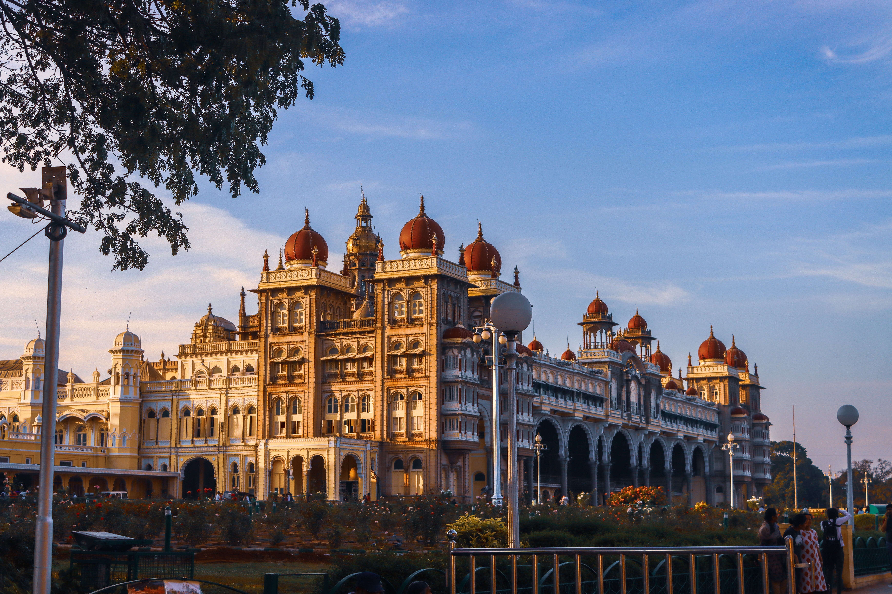

Mysore Palace
(Amba Vilas Palace)
It is located in Mysore, Karnataka, India.
It used to be the official residence of the
Wadiyar dynasty and the seat of the Kingdom
of Mysore.
The palace is in the centre of Mysore,and faces
the Chamundi Hills eastward Mysore is
commonly described as the'City of the Palaces'.
- 